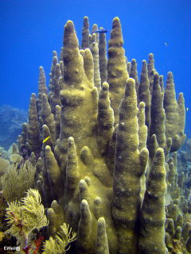

Dendrogyra cylindrus
| Coral Pilar | |
|---|---|
|  | |
| Riesgo de extinción | |
 Datos insuficientes (UICN) | |
| Clasificación científica | |
| Reino: | Animalia |
| Filo: | Cnidaria |
| Clase: | Anthozoa |
| Orden: | Scleractinia |
| Familia: | Meandrinidae |
| Género: | Dendrogyra |
| Especie: | Dendrogyra cylindrus |
| Nombre binomial | |
| Dendrogyra cylindrus | |
| Distribución | |
 Mapa de distribución de Dendrogyra cylindrus | |
Contenido
Taxonomía
Nombres comunes
Coral Pilar, Pillar Coral
Notas taxonómicas
Sinónimos
Descripción
Dendrogyra cylindrus es uno de los corales pétreos de mayor envergadura en la región del Caribe. Las colonias poseen una base incrustante a partir de la cual se desarrollan columnas o pilares que pueden alcanzar hasta 3 m de altura. El crecimiento de la colonia es simultáneo: (1) vertical en las columnas y (2) horizontal en la base (Geister 1972). Como miembro de la familia meandrinidae, esta especie presenta valles meandroides; las placas o septo-costae son bastante gruesas y se encuentran arregladas en dos órdenes alternantes que no llegan a unirse con los bordes superiores de los valles, dejando así un surco prominente (Veron 2000). Es gonocórica (i.e., sexos separados) y se ha reportado el desove de gametos y plánulas entre los meses de Mayo y Agosto en el Sur de la Florida. Tanto la fecundación como el desarrollo de la plánula ocurre en el agua (Szmant 1986); sin embargo, no existen descripciones sobre la ecología larval o del desove. La reproducción asexual en esta especie ocurre por fragmentación, comúnmente a partir de las columnas o pilares. Una característica visible de las colonias es el despliegue permanente de los tentáculos de los pólipos (i.e., día y noche), lo cual le confiere una apariencia diferente a la mayor parte de los corales formadores de arrecifes. La coloración de los pólipos es generalmente marrón-amarillento o marrón-verdoso. Evolutivamente es una especie reciente, apareciendo en el récord fósil luego del Pleistoceno (1,6 millones de años; Edinger y Risk 1995). Esta especie es el único representante del género Dendrogyra y su distribución a nivel regional es restringida.
Distribución
La especie es poco común pero conspicua. Se encuentra restringida al área del Gran Caribe, con excepción del suroeste del Golfo de México. Colonias de Dendrogyra cylindrus han sido reportadas desde el norte del Caribe en la Florida y Bahamas hasta el suroeste en Venezuela (Weil 2003) y Trinidad y Tobago, y también al sureste del Caribe en el Archipiélago de San Andrés y la isla de Providencia en Colombia (Acosta y Acevedo 2006). En el occidente del Caribe, desde la Península de Yucatán hasta Costa Rica y en el oriente en las Antillas menores y las Islas Vírgenes. Una (1) colonia ha sido reportada en Bermuda. A escalas locales, Dendrogyra cylindrus se localiza en pendientes arrecifales internas y/o parches someros aislados en fondos arenosos (Veron 2000); sin embargo, en los cayos de Florida, D. cylindrus parece estar restringida a pendientes arrecifales expuestas (Chiappone 2010). El rango de profundidad abarca desde los 2m hasta los 25 m. En Venezuela, la distribución actual de la especie generalmente se restringe a áreas coralinas ubicadas en plataformas arrecifales someras (2-15m) de las islas oceánicas centrales (i.e., Los Roques y Archipielago de Aves), sin embargo, trabajos menos recientes reportan esta especie en el Parque Nacional Morrocoy, San Esteban y Mochima (Weil 2003).
Situación
'Lista Roja Venezuela'
- Datos Insuficientes
'Lista Roja internacional'
- Vulnerable A4ce
La información sobre la densidad, estructura de tallas, reproducción, cobertura viva, estado de salud, etc. de las poblaciones de Dendrogyra cylindrus en más del 70% de su rango de distribución geográfica es desconocido; razón por la cual las estrategias de conservación específicas para esta especie no han podido ser delineadas. La ecología funcional de esta especie es poco conocida. La mayoría de los trabajos sobre estructura poblacional, reproducción y estado de salud se encuentran limitados a las costas de Florida, las Islas Vírgenes Estadounidenses, Puerto Rico y el Archipiélago de San Andrés en Colombia (Acosta y Acevedo 2006). La densidad poblacional parece depender de factores locales, los cuales pueden influenciar la dispersión por fragmentación. En el Archipiélago de San Andrés, Colombia, se ha reportado una densidad promedio de 97 ± 5 colonias/m2 (Acosta y Acevedo 2006); mientras que en Florida se ha reportado una densidad de 0,02 ± 0,14 colonias/m2 (Chiappone y Sullivan 1996). Sin embargo, la cobertura viva reportada está por debajo del 5% en área somera. En Venezuela, Weil (2003) reporta a la especie como común en el Parque Nacional Morrocoy, escasa en el Parque Nacional San Esteban y abundante en el Parque Nacional Archipiélago Los Roques e Isla de Aves basándose en datos colectados principalmente durante la década de los ochenta. Desde la publicación de esta recopilación, sólo se han identificado colonias de Dendrogyra cylindrus en Los Roques y Archipiélago de Aves (Cróquer, Villamizar com. pers. 2013). Por ello, El estado actual de las poblaciones de Dendrogyra cylindrus no está claro y se encuentra poco actualizado para la mayor parte del territorio nacional. Aunque el conocimiento sobre su biología y ecología reproductiva es limitado, en el 2008 esta especie fue incluida bajo la categoría de “Vulnerable A4ce” en la IUCN y desde 1990 forma parte de la lista de especies de CITES, Apéndice II. En la actualidad, Dendrogyra cylindrus está propuesta como especie amenazada según el “US Endangered Species ACT” (ESA).
Amenazas
Las principales amenazas que enfrenta esta especie son: (1) eventos de blanqueamiento masivos y (2) enfermedades coralinas. En el primer caso, períodos prolongados de estrés térmico en los que la temperatura promedio del mar en las islas oceánicas y las costas de Venezuela se han mantenido 2 ºC por encima del promedio durante varios meses, han producido mortandades extensas, en especial, en arrecifes oceánicos como el Archipiélago Los Roques. Esta condición fue registrada en el año 2005 y 2010 a lo largo de todo el Caribe y también en muchos arrecifes del Parque Nacional Los Roques, respectivamente. Concomitantemente, el blanqueamiento aumenta la susceptibilidad de las colonias a enfermedades debido al compromiso energético del metabolismo. En el Caribe, el 50% de las enfermedades de corales reportadas a nivel mundial han sido identificadas en esta región (Sutherland 2004). Las enfermedades de plaga blanca (EPB) ha sido la única reportada para Dendrogyra cylindrus (Sutherland 2004). Combinados, estas amenazas pudieran comprometer la supervivencia de esta especie a mediano o largo plazo, llevando a las colonias por debajo de su tamaño mínimo reproductivo . En Venezuela, no se ha evaluado y cuantificado el efecto de estos eventos de blanqueamiento sobre las poblaciones de Dendrogyra cylindrus.
Conservación
La especie se encuentra incluida en el Apéndice II del CITES. En Venezuela no se ha adoptado ninguna medida de conservación en particular. La especie parece presentar una distribución restringida a arrecifes oceánicos en islas. Su abundancia es desconocida, aunque se reportan densidades de entre 1 y 2 colonias por cada 100 m2 en 4 localidades de Los Roques y en Archipiélago de Aves (Villamizar com. pers. 2013). La disminución de cobertura por blanqueamiento y/o enfermedades, no se encuentra documentada, sin embargo la presencia de EPB y blanqueamiento de tejido ha sido observado en Los Roques. Se propone estimar la distribución y estructura poblacional en Venezuela y ejecutar programas de seguimiento del estado de salud de estas poblaciones, así como estimaciones de cobertura viva y regeneración de tejido. Se hace necesaria la evaluación de un mayor número de áreas para establecer la distribución real de la especie y cuantificar la pérdida o mantenimiento de cobertura viva. Estudios de conectividad genética pueden ayudar a determinar el estado poblacional de esta especie.
Editores y Colaboradores
Françoise cavada, Estrella Villamizar, Ana Iranzo,Aldo Croquer
Referencias
Acosta, A. y Acevedo, A. 2006. Population structure and colony condition of Dendrogyra cylindrus (Anthozoa: Scleractinea) in Providencia Island, Colombian Caribbean. Proceedings of 10th International Coral Reef Symposium, 1605-1610.
Chiappone, M. 2010. Public comment submitted to NMFS Southeast Regional Office, April 2010. Chiappone, M., and Sullivan K. M. 1996. Distribution, abundance and species composition of juvenile scleractinian corals in the Florida reef tract. Bull. Mar. Sci. 58:555-569.
Edinger, E. N., and Risk M. J. 1995. Preferential survivorship of brooding corals in a regional extinction. Paleobiology 21:200 219.
Geister, J. 1972. Nota sobre la edad de las calizas coralinas del Pleistoceno marino en las Islas de San Andres y Providencia (Mar Caribe occidental, Colombia).-Mit. Inst. Colombo-Aleman Investig. Cient. "Punta Betin", 6, 135-140.
Sutherland, K. P., Porter J. W., and Torres C. 2004. Disease and immunity in Caribbean and Indo-Pacific zooxanthellate corals. Mar. Ecol. Prog. Ser. 266:273-302.
Szmant, A. M.1986. Reproductive ecology of Caribbean reef corals. Coral Reefs 5:43-53.
Veron, J. E. N. 2000. Corals of the World. Australian Institute of Marine Science. Townsville, Australia 3 volumes.
Weil, E. 2003. The corals and Coral reefs of Venezuela. En: Cortés, J. Latin American Coral Reefs. Elsevier. New York. 497 pp.